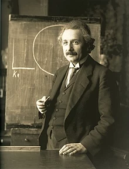

Ada Lovalace
Newton was a fellow of Trinity College and the second Lucasian Professor of Mathematics at the University of Cambridge. He was a devout, but unorthodox, Christian who privately rejected the doctrine of the Trinity.

Alan Turing
Newton was a fellow of Trinity College and the second Lucasian Professor of Mathematics at the University of Cambridge. He was a devout, but unorthodox, Christian who privately rejected the doctrine of the Trinity.

Albert Einstein
Newton was a fellow of Trinity College and the second Lucasian Professor of Mathematics at the University of Cambridge. He was a devout, but unorthodox, Christian who privately rejected the doctrine of the Trinity.

Issac Newton
Newton was a fellow of Trinity College and the second Lucasian Professor of Mathematics at the University of Cambridge. He was a devout, but unorthodox, Christian who privately rejected the doctrine of the Trinity.